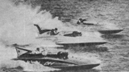

|
 API - photographer unknown |
The beginning to the end of a foreign powerhouse in unlimited racing commenced. The Miss Supertest II crashed at the Silver Cup and took her talented driver to his death. Six months later the teams owner, J. Gordon Thompson, of London, Ontario, Canada, decided to pull the plug, forever.
The following is the Associated Press account of Hayward's fatal
demise.
Two wirephotos accompanied this article. The photo above the
headline showed what is probably the last picture of the "S-test II"
before the fatal flip. She was running with Bill Muncey in the Miss
Century 21 (Thriftway) and Chuck Thompson's Miss Detroit, both
off her left hip, prior to the start of the heat. It's irony that this
picture should include three people that would die doing what
they loved best.
The other picture is of Bob Hayward in life jacket and 3/4 helmet
with full plastic bubble face protection. Probably the first such
driver to wear this type of face protection, rather than just eye
goggles.
The British International Trophy Race, or Harmsworth Trophy as it
was usually called, was never again raced with unlimited class
boats. Today it rests as an artifact of times past with the Royal
Yacht Club in England. The legacy of Alfred Harmsworth now
becoming a dusty memory.
The last site where this race was contested with unlimited boats
was on the Long Reach, of the Bay of Quinte, near Deseronto,
Ontario. Today that stretch of water is known as "Hayward's Long
Reach."
The Miss Supertest II was recovered from the Detroit river, but
was lost to fire several years back. The Miss Supertest III is on
display at the Hall of Transportation, Ontario Science Center, 770
Don Mills Road, Toronto, Canada, MC3 1T3. Included with her
exhibit is a 4 1/2 minute video of the '61 Harmsworth Trophy. You
can visit the Ontario Science Center
on the World-Wide-Web but you won't find the "S-test III" there,
you'll have to go in person.
Long live the piston packers,
- Parker Jones
DETROIT, Sept. 11. [1961]--(AP) Bob Hayward, a
soft-spoken Canadian who almost always was victorious, was
known as one of powerboating's most cautious drivers.
The 33-year old ex-chicken farmer from Embro, Ontario,
preached caution in his discussions of triumphs that brought
Canada the famed Harmsworth Trophy for the last three years.
Yesterday, Hayward tried a gamble in the Silver Cup
regatta in Miss Supertest II. He became the first driver to
be killed in 11 years in an unlimited hydroplane accident.
Hayward tried to squeeze Supertest between two boats
and into the lead on the first turn of the second heat.
"Supertest made a complete roll over," said her owner Jim
Thompson of London, Ontario.
"Hayward died instantly," said Dr. F. Sinclair Finch,
physician at the scene. "Death was caused by a broken neck
and other severe injuries."
Hayward was a national hero in Canada because of his
three Harmsworth victories in Miss Supertest III, the most
recent only last month in Picton, Ontario. In 1959 he
brought Canada her first Harmsworth, breaking 39 years of
United States' domination of the trophy, on the same Detroit
River course where he was killed.
Witnesses at the first turn and pit area said
Hayward's boat flipped when he tried to work her between
Seattle's Century 21 and Detroit's Miss U.S.1, the leaders
of the heat.
"I saw the whole thing." Thompson said, "Bob had just
pushed her into the lead when he flipped completely over."
Bud Saile, driver of Thunderbolt, rescued Hayward from
the overturned Supertest. Saile stopped his boat and jumped
into the water to aid the injured Canadian. A patrol boat
picked up Hayward and rushed him to a waiting ambulance.
The remaining heats of the 45-mile race were cancelled.
Miss Bardahl of Seattle, driven by Ron Musson, was
declared the Silver Cup champion on the basis of winning the
first section of the first heat with an average of 108.089
miles per hour. Such Crust, driven by Fred Alter of Detroit,
was placed second, winning the second section with 98.084.
Miss Century 21, the Gold Cup winner from Seattle
driven by Bill Muncey, was placed in third position. Five
Detroit boats followed in order--Gale V, Miss U.S.1,
Thunderbolt, Miss Detroit and Miss Lumberville. Then came
Miss Madison and Miss Supertest II.
Ironically, Miss Supertest II was disqualified in the
first heat for striking a buoy. Hayward called attention of
the officials to this, thus disqualifying himself.
With great need of points to remain in contention in
the three heat race, Hayward tried to get a quick start in
the second heat.
 Return to the Hydroplane Racing in Detroit page.
Return to the Hydroplane Racing in Detroit page.
All contents Copyright © 1997 Spirit of Detroit THUNDERFEST, except where noted.
Web page created by Brian Reed.
 Return to the Top THUNDERFEST page.
Return to the Top THUNDERFEST page.
All Rights Reserved.